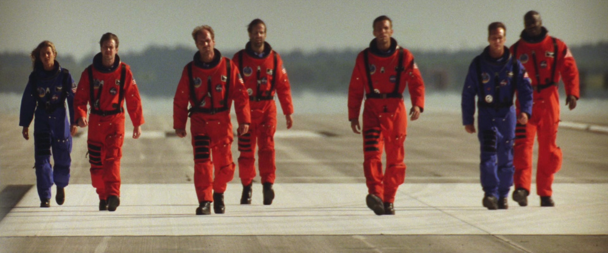

This full shot from one of the best Quentin Tarantino movies Django Unchained is also a tracking shot — meaning there is camera movement featured throughout the shot. In this particular case, the film shooting camera slowly moves (or tracks) towards Django.
So, technically, this movie shot begins in a wide shot, moves to full shot (seen above), and eventually ends in a cowboy shot.
Of all the different types of camera shots in film, full shots can be used to feature multiple characters in a single shot.
https://www.studiobinder.com/blog/ultimate-guide-to-camera-shots/